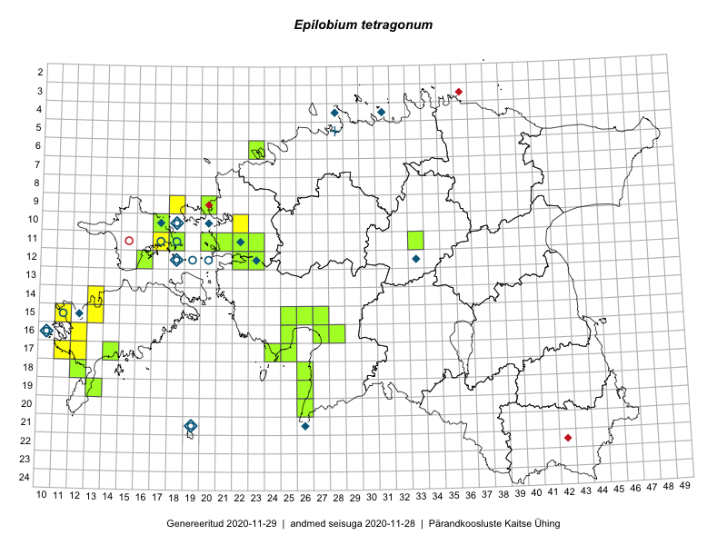

Epilobium tetragonum — laskuvalehine pajulill
Kaardile koondatud taksonid: Epilobium tetragonum L. (59)

Kaart põhineb 59 kirjel, neist:
vaatlusi 24
eksemplare 35
Kaasaegsed1 leiukohad asuvad 34 ruudus.
Andmed “Eesti taimede levikuatlasest”,2 sulgudes ruutude arv:3
● 1971–2005 (16)
○ 1921–1970 (4)
△ kuni 1920 (0)
+ hävinud (0)
? kaheldav (0)
Lisaruudud teistest andmebaasidest:4
ELF: 2006– . . . (0)
PKÜ: 2006– . . . (0)
ELF: 1971–2005 (0)
PKÜ: 1997–2005 (0)
| Ruut | Vaatleja(d) | Vaatlusaeg | Kirje PlutoFis |
|---|---|---|---|
| 11-17 | Eeva-Maria Jeletsky, Tarmo Niitla | 2015-06-20 | ruut/ala: Epilobium tetragonum L. |
| 18-12 | Mari Reitalu, Sirje Azarov, Oliver Parrest | 2015-08-02 | ruut/ala: Epilobium tetragonum L. |
| 15-13 | Mari Reitalu, Oliver Parrest | 2015-07-24 | ruut/ala: Epilobium tetragonum L. |
| 17-12 | Mari Reitalu, Triin Reitalu | 2015-07-22 | ruut/ala: Epilobium tetragonum L. |
| 15-11 | Mari Reitalu, Oliver Parrest | 2015-07-16 | ruut/ala: Epilobium tetragonum L. |
| 17-11 | Mari Reitalu, Triin Reitalu | 2015-08-05 | ruut/ala: Epilobium tetragonum L. |
| 04-40 | Kaili Orav, Silvia Pihu | 2015-07-21 | ruut/ala: Epilobium tetragonum L. |
| 11-22 | Tõnu Ploompuu | 2015-08-21 | ruut/ala: Epilobium tetragonum L. |
| 11-23 | Hanna-Eliisa Luts, Marian Hiie, Tõnu Ploompuu | 2015-08-04 | ruut/ala: Epilobium tetragonum L. |
| 10-22 | Tõnu Ploompuu | 2015-08-21 | ruut/ala: Epilobium tetragonum L. |
| 17-24 | Tiit Hallikma, Tõnu Ploompuu | 2016-07-06 | ruut/ala: Epilobium tetragonum L. |
| 17-25 | Tiit Hallikma, Tõnu Ploompuu | 2016-07-06 | ruut/ala: Epilobium tetragonum L. |
| 19-40 | Malle Leht | 2015-07-18 | ruut/ala: Epilobium tetragonum L. |
| 18-12 | Oliver Parrest, Mari Reitalu, Sirje Azarov | 2015-08-02 | punkt: Epilobium tetragonum L. |
| 15-27 | Tiit Hallikma, Tõnu Ploompuu | 2016-07-20 | ruut/ala: Epilobium tetragonum L. |
| 11-21 | Hanna-Eliisa Luts, Tõnu Ploompuu | 2015-08-13 | punkt: Epilobium tetragonum L. |
| 11-22 | Tõnu Ploompuu | 2015-08-21 | punkt: Epilobium tetragonum L. |
| 11-22 | Tõnu Ploompuu | 2015-08-21 | punkt: Epilobium tetragonum L. |
| 06-23 | Peedu Saar | 2018-07-04 | ruut/ala: Epilobium tetragonum L. |
| 06-23 | Peedu Saar | 2018-07-04 | punkt: Epilobium tetragonum L. |
| 06-23 | Peedu Saar | 2018-07-06 | punkt: Epilobium tetragonum L. |
| 16-12 | Mari Reitalu | 2019-07-27 | punkt: Epilobium tetragonum L. |
| 09-18 | Ott Luuk | 2019-09-17 | punkt: Epilobium tetragonum L. |
| 09-18 | Ott Luuk | 2019-09-17 | ruut/ala: Epilobium tetragonum L. |
| 12-22 | Peedu Saar, Ott Luuk | 2015-08-24 | TAA0135383: Epilobium tetragonum L. |
| 12-23 | Oliver Parrest, Mari Reitalu | 2016-07-05 | TAA0137775: Epilobium tetragonum L. |
| 19-13 | Mari Reitalu, Sirje Azarov | 2016-07-31 | TAA0137666: Epilobium tetragonum L. |
| 16-27 | Indrek Tammekänd | 2015-07-08 | TAA0136022: Epilobium tetragonum L. |
| 16-27 | Indrek Tammekänd | 2015-07-18 | TAA0136138: Epilobium tetragonum L. |
| 18-12 | Oliver Parrest, Mari Reitalu, Sirje Azarov | 2015-08-02 | TAA0133663: Epilobium tetragonum L. |
| 15-25 | Maret Gerz, Leena Gerz | 2015-08-08 | TAA0132764: Epilobium tetragonum L. |
| 11-22 | Tõnu Ploompuu | 2015-08-21 | TAA0118907: Epilobium tetragonum L. |
| 11-22 | Tõnu Ploompuu | 2015-08-21 | TAA0118908: Epilobium tetragonum L. |
| 11-22 | Tõnu Ploompuu | 2015-08-23 | TAA0118923: Epilobium tetragonum L. |
| 11-23 | Tõnu Ploompuu | 2015-08-04 | TAA0118963: Epilobium tetragonum L. |
| 15-25 | Toomas Kukk, Oliver Parrest | 2016-07-08 | TAA0139492: Epilobium tetragonum L. |
| 17-24 | Tiit Hallikma, Tõnu Ploompuu | 2016-07-06 | TAA0134578: Epilobium tetragonum L. |
| 19-26 | Indrek Tammekänd | 2016-06-29 | TAA0139812: Epilobium tetragonum L. |
| 17-25 | Tiit Hallikma, Tõnu Ploompuu | 2016-07-06 | TAA0134557: Epilobium tetragonum L. |
| 15-27 | Tiit Hallikma, Tõnu Ploompuu | 2016-07-20 | TAA0134552: Epilobium tetragonum L. |
| 16-28 | Peedu Saar, Timo Luhamäe | 2017-08-11 | TAA0141320: Epilobium tetragonum L. |
| 20-26 | Ott Luuk | 2017-08-30 | TAA0141864: Epilobium tetragonum L. |
| 11-20 | Ott Luuk, Ilmar Uibopuu | 2017-08-10 | TAA0142783: Epilobium tetragonum L. |
| 11-20 | Ott Luuk, Ilmar Uibopuu | 2017-08-10 | TAA0142784: Epilobium tetragonum L. |
| 11-21 | Ott Luuk, Ilmar Uibopuu | 2017-08-10 | TAA0142785: Epilobium tetragonum L. |
| 06-23 | Toomas Kukk, Ilmar Uibopuu, Kadri Kuusksalu | 2017-07-26 | TAA0142029: Epilobium tetragonum L. |
| 15-26 | Indrek Tammekänd | 2017-07-10 | TAA0143339: Epilobium tetragonum L. |
| 16-27 | Indrek Tammekänd | 2017-07-29 | TAA0143394: Epilobium tetragonum L. |
| 12-16 | Ott Luuk, Peedu Saar | 2017-09-15 | TAA0142833: Epilobium tetragonum L. |
| 12-16 | Ott Luuk, Peedu Saar | 2017-09-15 | TAA0142834: Epilobium tetragonum L. |
| 11-18 | Peedu Saar | 2018-07-09 | TAA0146941: Epilobium tetragonum L. |
| 06-23 | Peedu Saar | 2018-07-05 | TAA0146942: Epilobium tetragonum L. |
| 11-18 | Toomas Kukk | 2018-07-09 | TAA0146562: Epilobium tetragonum L. |
| 11-33 | Eerik Leibak, Tõnu Ploompuu, Marko Veinbergs | 2016-07-22 | TAA0146060: Epilobium tetragonum L. |
| 18-26 | Timo Luhamäe, Meeli Mesipuu | 2016-07-18 | TAA0145288: Epilobium tetragonum L. |
| 18-26 | Timo Luhamäe, Meeli Mesipuu | 2016-07-18 | TAA0145289: Epilobium tetragonum L. |
| 17-14 | Indrek Tammekänd | 2018-07-04 | TAA0147733: Epilobium tetragonum L. |
| 09-20 | Kadi-Liis Kesler | 2015-07-18 | TAA0148326: Epilobium tetragonum L. |
| 09-20 | Kadi-Liis Kesler | 2015-09-06 | TAA0148394: Epilobium tetragonum L. |
Kaasaegsed leiukohad (tähistatud värvitud ruutudega) põhinevad peamiselt 2014–2019 välitööandmetel. Väiksemal määral on andmebaasi kantud vanemaid leiuandmeid aastatest 2006–2013.↩︎
Kukk, T., Kull, T., Eesti taimede levikuatlas. Eesti Maaülikool, Põllumajandus- ja Keskkonnainstituut, Tartu, 2005.↩︎
NB! 2005. aasta atlase andmestikus katavad uuemad leiud vanemaid. Näiteks kui liik on ruudus registreeritud 1971–2005, siis pole võimalik öelda, kas ta oli sellest ruudust teada ka enne 1970. aastat. Vana atlase andmetel hävinud ja kaheldavaid leiukohti pole hilisemate (taas)leidude põhjal korrigeeritud.↩︎
Eestimaa Looduse Fondi (ELF) ja Pärandkoosluste Kaitse Ühingu (PKÜ) andmebaasid sisaldavad inventeeritud koosluste kirjeldusi ja liigiloendeid. Neist andmekogudest on kaardile lisatud lisatud vaid need ruudud, millest uue atlase andmekogus taksoni kohta kirjeid veel pole. Kõrvale on jäetud teadaolevalt kaheldavad määrangud. Kaartidel katavad uuema perioodi andmed vanemaid, PKÜ omad ELFi omi. Kattumise tõttu võib kaardil näha olla vähem mingi kategooria ruute kui legendis olev arv näitab. ELFi ja PKÜ andmed ei kajastu hetkel vaatluste tabelis ega ruutude liigiloendites.↩︎